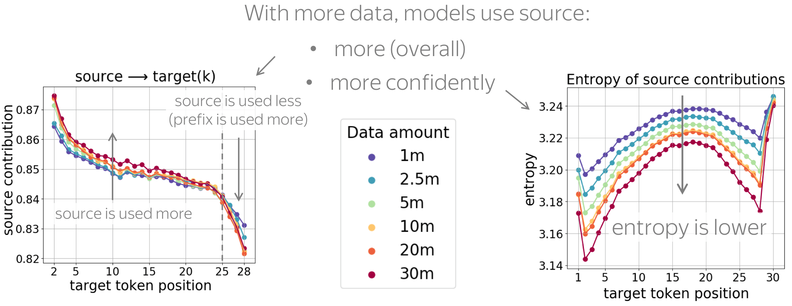
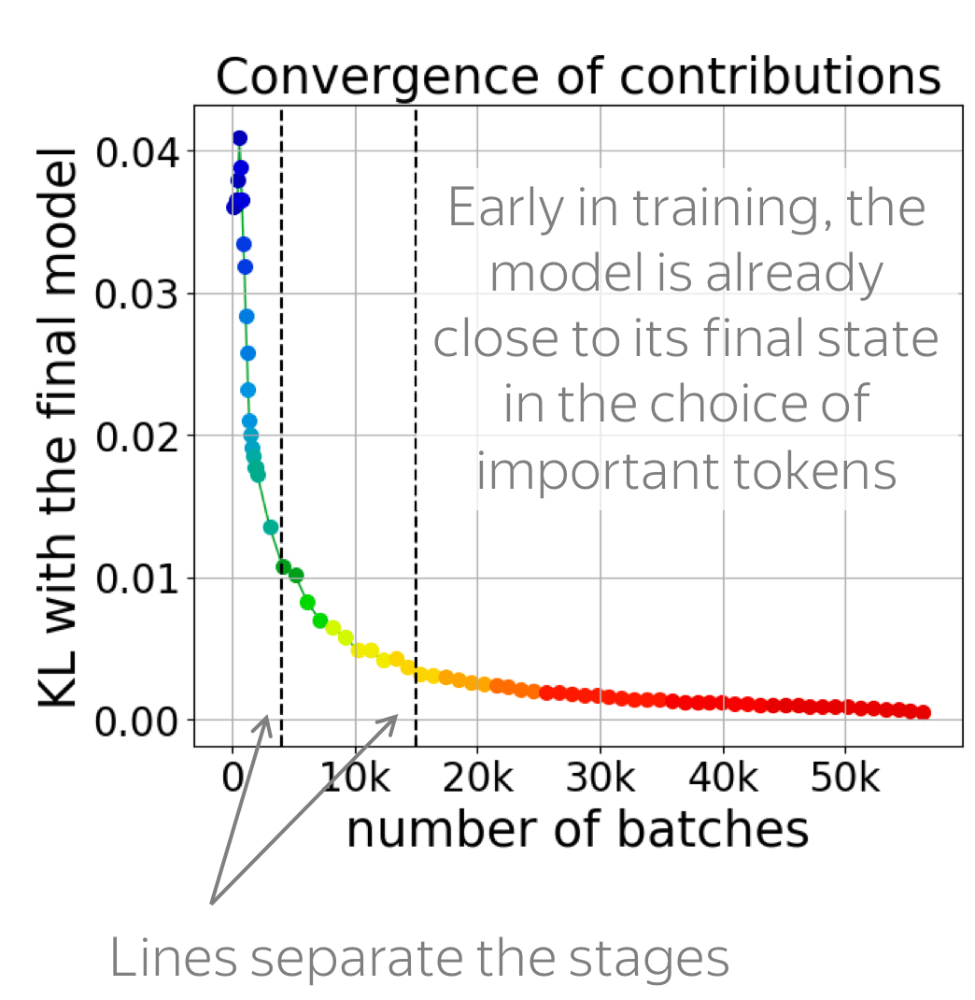
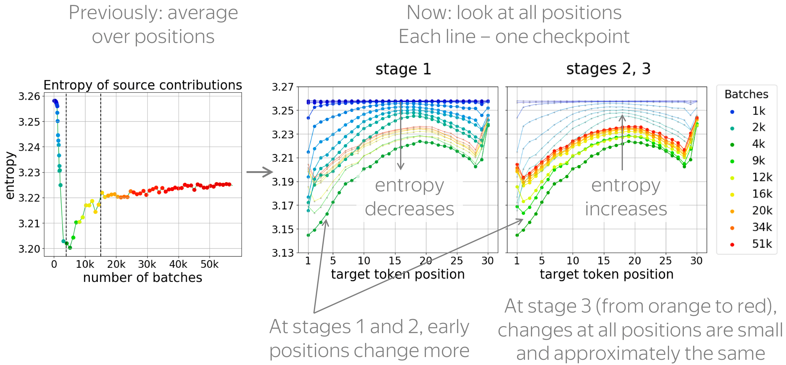
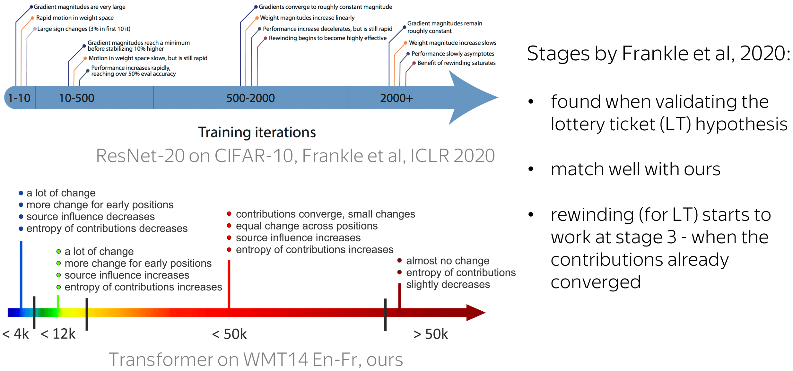

October 2020
October 2020

NMT models (and, more generally, conditional language models) generate target sentence word by word, and at each step, they use two types of context: the source and the prefix of the target sentence.

Intuitively, we may expect that some tokens are predicted based on mostly source information (informative tokens), while others are based mainly on target history (e.g. determiners). But how can we know which information the model used?
So far, we could only look at the most important tokens within either source or target separately (e.g. by looking at attention weights or using more complicated methods). But there is no way to measure the trade-off between the source and the target.
This is exactly what we will do! But first, let's understand why do we care about the source-target trade-off.
The main reason for investigating the source-target trade-off is that NMT models often fail to properly use these two kinds of information. For example, context gates (which learn to weight source and target contexts) help for both RNNs and Transformers.
A more popular and clear example is hallucinations, when a model produces sentences that are fluent but unrelated to the source. The hypothesis is that in this mode, a model ignores information from source and samples from its language model. While we do not know what forces a model to hallucinate in general, previous work showed some anecdotal evidence that when hallucinating, a model does fail to use source properly. Look at the examples of attention maps of hallucinating models: models may put most of the decoder-encoder attention to uninformative source tokens, e.g. EOS and punctuation.

The figure is from
Berard et al, 2019.

The figure is from
Lee et al, 2018.
While these examples are interesting, note that this evidence is rather anecdotal: these are only a couple of examples when a model is "caught in action" and even for the same Transformer model, researchers found different patterns.

Note that when we ask what influences a prediction, we are interested not in some abstract quantity but in relative contributions. In simple words, imagine we have everything that took part in forming a prediction - let's call it "total contribution". What we are interested in is the part of the total contribution.

The figure is adapted from the one taken from
Dan Shiebler's blog post.
We show that a natural way to estimate how the source and target contexts contribute to generation is to apply Layerwise Relevance Propagation (LRP) to NMT models. LRP is one of the attributions method originally designed for computer vision models. In general, attribution methods try to identify those parts of the input (e.g. pixels in an input image) which contribute to a given prediction. Layerwise Relevance Propagation does this by recursively propagating a prediction through the network from the output to the input. While the prediction is formed in the forward pass, relevance propagation evaluates relevancies in the backward pass.
In LRP, the total contribution is constant ⇒ we can evaluate relative contributions.
While there are many attribution methods with different properties, only LRP gives us a straightforward way to evaluate relative contributions.

Differently from other methods estimating the influence of individual tokens, LRP evaluates not an abstract quantity reflecting token importance, but the proportion of each token's influence. It is possible because of its conservation principle: LRP redistributes relevance so that in each layer, the total contribution of all neurons is constant.
At first glance, it can be unclear how to apply a layer-wise method to a not completely layered architecture (such as encoder-decoder). However, this is rather straightforward and is done in two steps:
The total contribution of neurons in each decoder layer is not preserved (part of the relevance leaks to the encoder), but the total contribution of all tokens – across the source and the target prefix – remains equal to the model prediction.
Look at the illustration: applying LRP at different generation steps, we can now say which predictions are based on the source more (or less) than the others.
In the paper, we also explain in detail the following:
In the experiments, we analyze models trained on the WMT14 English-French dataset. We will vary the prefix on which the model is conditioned during generation (reference, model-generated or random), the training objective, the dataset size, and timesteps during model training. We will come to this very soon, but first, let me explain what we will be looking at.
We look at token contributions for each generation step separately. In this way, we'll be able to see what happens during the generation process.
• total source contribution
The total contribution of source is the sum of contribution of source tokens. Note that since we evaluate relative contributions, \(contr(source) = 1 - contr(prefix)\).
• entropy of contributions
The entropy of contributions tells us how 'focused' the contributions are: whether the model is confident in the choice of relevant tokens or spreads its relevance across the whole input. In this blog post, we will see only entropy of source contributions, but in the paper, we do the same for target contributions.
For individual predictions, relevance propagation can be inaccurate. For example, it can underestimate small contributions; additionally, contributions of input elements (pixels, tokens, etc.) can differ little. Therefore, we look not at individual predictions but at general patterns.

By "general patterns", we mean something that characterizes model behavior in general and not for a single example. For this, we take an average over an evaluation set. In each evaluation set, all source sentences, as well as all target sentences, have the same length. Look at the illustration.
Note also that we do not talk about absolute values of contributions (e.g., we do not say something of the kind "source contribution is usually x%"), but how the general patterns change when varying training objectives, data amount, timestep in training, etc.
Before comparing different models, let us first get acquainted with the graphs: let's look at the results for a single model.
For each target position, the figure shows the source contribution. We see that, as the generation progresses, the influence of source decreases (i.e., the influence of target increases). This is expected: with a longer prefix, it becomes easier for the model to understand which source tokens to use, and at the same time, it needs to be more careful to generate tokens that agree with the prefix.

Note also a large drop of source influence for the last token: apparently, to generate the EOS token, the model relies on prefix much more than when generating other tokens.
During generation, entropy increases until approximately 2/3 of the translation is generated, then decreases when generating the remaining part. Interestingly, for the last punctuation mark and the EOS token, entropy of source contributions is very high: the decision to complete the sentence requires a broader context.
Now, let us look at the changes in these patterns when conditioning on different types of target prefixes: reference, model translations, and prefixes of random sentences.

First, let us compare how models react to prefixes that come from reference and model translations. We know that beam search translations are usually simpler than references: several papers show that they contain fewer rare tokens, have less reorderings and are simpler syntactically.

When conditioned on these simpler prefixes, the model relies on the source more and is more confident when choosing relevant source tokens (the entropy of source contributions is lower). We hypothesize that these simpler prefixes are more convenient for the model, and they require less reasoning on the target side.
Now, let us give a model something unexpected: prefixes of random sentences. In this experiment, a model has a source sentence and a prefix of the target sentence, which do not make sense together.

On the one hand, sometimes NMT models switch to a hallucination mode: they ignore the source and generate from their language mode. As a result, they generate sentences that are fluent but unrelated to the source. On the other hand, language models can ignore a gibberish prefix: this cool paper investigating the exposure bias reported this self-recovery ability of LMs.
What will our model do: ignore the source or the prefix? According to previous work, it can do either!
As we see from the results, the model tends to fall into hallucination mode even when a random prefix is very short, e.g. one token: we see a large drop of source influence for all positions. This behavior is what we would expect when a model is hallucinating, and there is no self-recovery ability.

Next, we see that with a random prefix, the entropy of contributions is very high and is roughly constant across positions. This is expected: a model can not understand which source tokens are useful to continue a random prefix.
The results we just saw agree with some observations made in previous work studying self-recovery and hallucinations. Now, we illustrate more explicitly how our methodology can be used to shed light on the effects of exposure bias and training objectives.
Exposure bias means that in training, a model sees only gold prefixes, but at test time, it uses model-generated prefixes (which can contain errors). This ACL 2020 paper suggests that there is a connection between the hallucination mode and exposure bias: the authors show that Minimum Risk Training (MRT), which does not suffer from exposure bias, reduces hallucinations. However, they did not directly measure the over-reliance on target history. Luckily, now we can do this :)

We want to check to what extent models that suffer from exposure bias to differing extent are prone to hallucinations. For this, we feed different types of prefixes, prefixes of either model-generated translations or random sentences, and look at model behavior. While conditioning on model-generated prefixes shows what happens in the standard setting at model's inference, random prefixes (fluent but unrelated to source prefixes) show whether the model is likely to fall into a language modeling regime, i.e., to what extent it ignores the source and hallucinates.

In addition to the baseline and the models trained with the Minimum Risk Training objective (considered in previous work), we also experiment with word dropout. This is a data augmentation method: in training, part of tokens are replaced with random. When used on the target side, it may serve as the simplest way to alleviate exposure bias: it exposes a model to something other than gold prefixes. This is not true when used on the source side, but for analysis, we consider both variants.

The results for both types of prefixes confirm our hypothesis:
Models suffering from exposure bias are more prone to over-relying on target history (and hence to hallucinating) than those where the exposure bias is mitigated.
Indeed, we see that MRT-trained models ignore source less than any other model; the second best for random prefixes is the target-side word dropout, which also reduces exposure bias.
It is also interesting to look at the entropy of source contributions to see whether these objectives make the model more or less "focused". We see that only MRT leads to more confident contributions of source tokens: the entropy is lower. In contrast, both word dropout variants teach the model to use broader context.

We know that a large amount of training data is very important for NMT models to perform well. But how the amount of training data influences contributions?
First, we see that, generally, models trained with more data use source more. Second, with more training data, the model becomes more confident in the choice of important tokens: the entropy of contributions becomes lower (in the paper, we also show entropy of target contributions).
Finally, let's look at what happens during model training. All results are summarized in the figure below; on the x-axis are the number of training batches.

Now, let's go over all these results one by one.
First, we look at how fast the contributions converge. For this, we evaluate KL divergence between token influence distributions of the final converged model and the one in training.
The figure shows that contributions converge early. After approximately 12k batches, the model is very close to its final state in the choice of tokens to rely on for a prediction: everything that happens after that is just refining the model.
The figures below show changes in the amount and entropy of contributions (average over examples and positions). We see that the changes are not monotonic, and different stages can be seen clearly. This means that something qualitatively different is going on during model training, and we hope that someone (maybe you?) will look into this further.

Look at the changes in the entropy of contributions: it goes down, then up. We hypothesize that first, the model learns something very simple (e.g. word-by-word translation): this is when the entropy goes down. Then, the model learns more complicated stuff and uses broader contexts.
Previously we looked at the changes on average over all positions. Now, let's look at all positions. In the figures, we show a separate line for each checkpoint; each line shows the entropy of source contributions for each target position, and the lines are colored based on the checkpoint number.
We see that early positions change more: they are the ones where the entropy goes down most at the first stage and the ones where it goes up most in the second stage. Only at the last stage, when very little is going on, all positions change approximately the same.
In the paper, we also show that early positions are learned first: at the end of the first stage, per-token predictive accuracy at the early target positions is the highest.
Interestingly, our stages agree with the ones found by Frankle et al, 2020 for ResNet-20 trained on CIFAR-10 when investigating, among other things, the lottery ticket hypothesis. Their stages were defined based on the changes in gradient magnitude, in the weight space, in the performance, and in the effectiveness of rewinding in search of the 'winning' subnetwork (for more details on the lottery ticket hypothesis and the rewinding, see e.g. this paper).
Comparing those stages with ours, first, we see that their relative sizes in the corresponding timelines match well. Second, the rewinding starts to be effective at the third stage; for our model, this is when the contributions have almost converged. In future work, it would be interesting to look into this relation further.
Let's summarize what you just saw:
I think the best possible answer is "It's up to you" :)
But you want our opinion, we do have some ideas how this can be useful. For example,